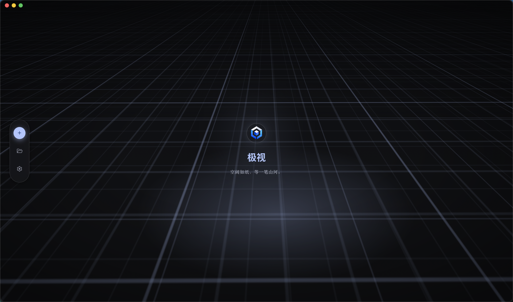
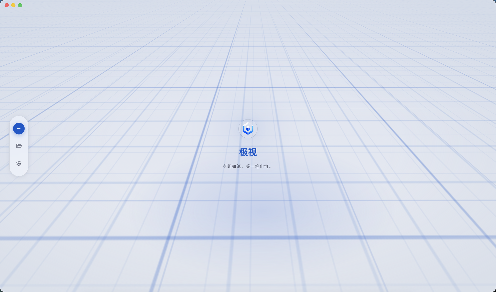

Preview right in Finder
Select a self-contained GLB and press Space to rotate, zoom and fit. See model thumbnails directly in Finder.
极视
See every dimension.
New in 0.5.0 · Finder previews & thumbnails
Inspect 3D models in a lightweight Mac app, or press Space in Finder for an interactive GLB preview. Keep your assets local.
Blank as paper—awaiting the stroke of mountains.


Select a self-contained GLB and press Space to rotate, zoom and fit. See model thumbnails directly in Finder.
Quick Look adjusts capacity to your memory, GPU and system conditions, with four file budgets from 128 to 512 MiB.
Orbit, zoom, and frame models with smooth camera controls.
Open glTF, GLB, OBJ or STL files, browse folders, and package supported assets as GLB or embedded glTF.
Start with a lightweight overview of large GLB or glTF assets in the app, then load more detail while keeping your view.
Export a transparent PNG from the current view — preview, pan/zoom, then save via the native dialog.
Download the DMG, drag Trivor to Applications, then launch it from Launchpad or Finder.
The current release is ad-hoc signed and has not been notarized by Apple. If macOS blocks it, try opening it once, then go to System Settings → Privacy & Security and choose Open Anyway for Trivor.
The app opens glTF and GLB, and imports OBJ and STL through conversion. Finder previews and thumbnails support self-contained GLB files only.
macOS 13 Ventura or later. The universal app includes Apple Silicon and Intel builds; 0.5.0 was runtime-tested on macOS 27.2 with Apple Silicon.
Space previews use file budgets of 128, 256, 384 or 512 MiB, selected automatically. Decoded textures, geometry and scene complexity also count; memory or thermal pressure can lower capacity. Background thumbnails keep a 64 MiB file limit. Open larger models in the app for progressive previews.
Install Trivor 0.5.0 or later in Applications, select a self-contained GLB and press Space. If disabled, search System Settings for Extensions and enable Trivor GLB Preview and Trivor GLB Thumbnail under Quick Look. Other GLB extensions may affect which preview macOS uses.